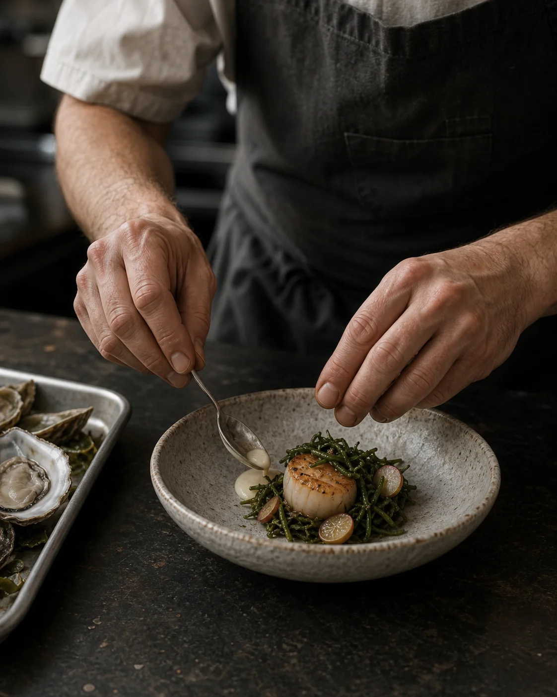

Story
Where salt
meets soil
The name comes from the flat, mirrored water left between oyster beds at low tide. Our menu follows that meeting of salt and soil—raw, smoked, preserved, and cooked over oak.
The room is warm, unhurried, and exacting without ceremony.
Explore the menu